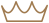

Все представители нашего питомника имеют ветеринарный паспорт
с отметками о прививках и документ с родословной


Мейн-Кун - это порода, которая вызывает к себе уважение. Приобретая в свой дом этого питомца,
вы получите умное животное, которому нет равных

Приобретая животное в нашем питомнике, вы получите

Бесплатное ветеринарное
обслуживание 5 лет

Консультирование по любому
вопросу 24 часа в сутки

Индивидуальный подбор
питания для вашего кота